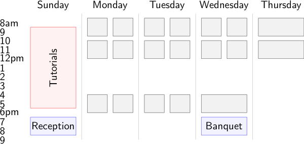

Sunday March 24 - Thursday March 28, 2019
Copper Mountain, Colorado
Schedule at a glance


Conference Deadlines
- Presentation Abstracts: January 21, 2019
- Student Competition Abstract: December 12, 2018
- Student Competition Paper: January 9, 2019
- Early Registration: January 25, 2019 (midnight Mountain)
- Journal Special Issue: June 15, 2019
- Lodging: February 21, 2019
Organized by
Front Range Scientific Computations, Inc.Co-Organized by
The University of Colorado , the Center for Applied Scientific Computing at LLNL , and the University of Illinois at Urbana-Champaign
Previous Conference Information
- 2017 - 18th Copper Mountain Conference On Multigrid Methods
- 2016 - 14th Copper Mountain Conference On Iterative Methods
- 2015 - 17th Copper Mountain Conference On Multigrid Methods
- 2014 - 13th Copper Mountain Conference On Iterative Methods
- 2013 - 16th Copper Mountain Conference On Multigrid Methods
- 2012 - 12th Copper Mountain Conference On Iterative Methods
- 2011 - 15th Copper Mountain Conference On Multigrid Methods
- 2010 - 11th Copper Mountain Conference On Iterative Methods
- 2009 - 14th Copper Mountain Conference On Multigrid Methods
- 2008 - 10th Copper Mountain Conference On Iterative Methods
- 2007 - 13th Copper Mountain Conference On Multigrid Methods
- 2006 - 9th Copper Mountain Conference On Iterative Methods
- 2005 - 12th Copper Mountain Conference On Multigrid Methods
- 2004 - 8th Copper Mountain Conference On Iterative Methods
- 2003 - 11th Copper Mountain Conference On Multigrid Methods
- 2002 - 7th Copper Mountain Conference On Iterative Methods
- 2001 - 10th Copper Mountain Conference On Multigrid Methods
- 2000 - 6th Copper Mountain Conference On Iterative Methods
- 1999 - 9th Copper Mountain Conference On Multigrid Methods
- 1998 - 5th Copper Mountain Conference On Iterative Methods
- 1997 - 8th Copper Mountain Conference On Multigrid Methods
- 1996 - 4th Copper Mountain Conference On Iterative Methods
- 1995 - 7th Copper Mountain Conference On Multigrid Methods
- 1994 - 3rd Copper Mountain Conference On Iterative Methods
- 1992 - 2nd Copper Mountain Conference on Iterative Methods in Numerical Linear Algebra
- 1990 - 1st Copper Mountain Conference on Iterative Methods
Copper Mountain Information
- Annette has $70 lift tickets for purchase
- rental, lesson, & tubing information